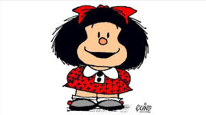

Mafalda es una niña argentina creada por el dibujante Quino en 1964. Con su mirada crítica y reflexiva sobre la sociedad, la política y la injusticia, se convirtió en una voz influyente no solo en Argentina, sino en todo el mundo de habla hispana. Mafalda representa la consciencia social, y a través de su humor nos invita a pensar en la paz, los derechos humanos y el futuro del planeta.
>Personajes Principales de la Tira
Mafalda: La protagonista, una niña preocupada por la humanidad y la paz mundial.
Felipe: El soñador del grupo, con grandes fantasías pero algo distraído.
Manolito: Hijo de un almacenero, siempre piensa en los negocios y el dinero.
Susanita: Preocupada por casarse y tener hijos, representa el estereotipo de la mujer tradicional.
Guille: El hermano menor de Mafalda, curioso y algo travieso
Viñetas Clásicas
| Fecha de Publicación |
Viñeta |
29 de Septiembre,1964
primera aparicion de Mafalda |
| 15 de marzo, 1967
mafalda reflexiona sobre la paz mundial |
| 5 de junio, 1973
mafalda critiva las injusticias sociales |
